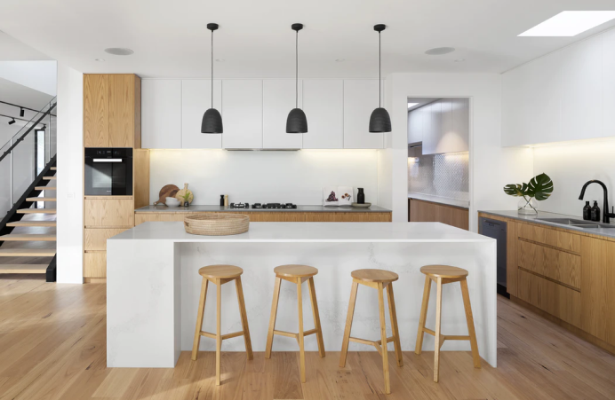

Премиальный европейский текстиль — одно из самых главных направлений работы коллектива. Создавать неповторимые интерьеры для наших дорогих клиентов, уделяя внимание мельчайшим деталям — вот то, что по-настоящему вдохновляет дизайнеров нашей студии.
Наш коллектив сделает все, чтобы после сотрудничества с нами, Вам было приятно сказать: « Да! Это именно то, что действительно достойно моего дома!»
Преимущества
5
лет опыта
100
проектов
10
наград
Наши работы
Квартира-студия
30 кв.м.
В квартире были светлые стены и тёплые цвета. Мы сконцентрировались на отсылках к природе и сделали ребятам уютный интерьер, отсылающий к виллам островов Бали.

Кухня
20 кв.м.
В квартире были светлые стены и тёплые цвета. Мы сконцентрировались на отсылках к природе и сделали ребятам уютный интерьер, отсылающий к виллам островов Бали.
Гостинная
14 кв.м.
В квартире были светлые стены и тёплые цвета. Мы сконцентрировались на отсылках к природе и сделали ребятам уютный интерьер, отсылающий к виллам островов Бали.
Ванная
8 кв.м.
В квартире были светлые стены и тёплые цвета. Мы сконцентрировались на отсылках к природе и сделали ребятам уютный интерьер, отсылающий к виллам островов Бали.
Команда
Это Маша, наш главный дизайнер. Она отвечает за дизайн-проект, приезжает к вам домой, общается и помогает сделать вашу квартиру красивой и уютной.
С нашим менеджером Сашей вы познакомитесь в первую очередь. Она проконсультирует вас, соберёт все документы и ответит на все вопросы.
Катя тоже занимается дизайном. Она всегда находит общий язык с клиентами и точно знает, как обсутроить дом так, чтобы вам понравилось.
Как мы работаем
Знакомимся, выезжаем на объект, утверждаем концепцию, подписывем договор.